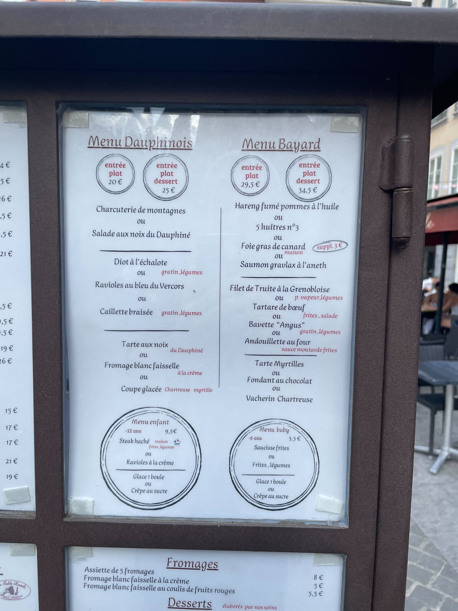

How do stars and planets form? How do black holes accrete? How does dust form in the winds of giant stars? How does the common envelope get ejected?
All of these questions can be answered using Phantom, a smoothed particle hydrodynamics code, MCFOST, a class-leading radiative transfer code originally developed at the University of Grenoble-Alpes, and Shamrock, a GPU-first SPH code in the Phantom family.
We are delighted to host the 2nd European Phantom code family users workshop in 2025, also known as the 7th Phantom users workshop
1. To consolidate development efforts
2. To set a roadmap for development priorities
3. To grow the user community, and especially to encourage sideways interaction between users
We will set each afternoon of the workshop as a hackfest, to collaboratively implement new features and tests
Dates: 2nd-6th June 2025
Venue: IPAG, Grenoble, France
The conference schedule is available below.
Each day will feature a series of science talks in the morning, with afternoons focused around collaborative hack sessions.
| Name | Affiliation | Talk Title |
|---|---|---|
| Antoine Alaguero | University of Grenoble-Alpes, France | Planet formation in multiple stellar systems |
| Hossam Aly | TU Delft, Netherlands | Free precession in undriven warps in protoplanetary discs: a cautionary tale |
| Jose Barria | University del Valparaiso, Chile | Mass accretion rate and radiative feedback in circumbinary disks around supermassive black hole binaries |
| Yann Bernard | University of Grenoble-Alpes, France | Dawn : The childhood of stars and stellar clusters |
| George Blaylock-Squibbs | University of Central Lancashire, UK | Chemistry of Gravitationally Unstable Disks |
| Josh Calcino | Tsinghua University, China | Substructures in Planet-forming Discs: Companions, GI, or something else? |
| Ethan Carter | University of Central Lancashire, UK | The properties of disc-instability protoplanets |
| Nicolás Cuello | University of Grenoble-Alpes, France | Setting discs on fire with stellar flybys |
| Timothée David--Cléris | University of Grenoble-Alpes, France | Beyond a PhD Code: The Rise of the Shamrock |
| David Dionesse | Universite libre de Bruxelles, Belgium | Cooling routines for AGB winds |
| Mats Esseldeurs | KU Leuven, Belgium | |
| Jean-François Gonzalez | CRAL, France | Spirals in discs of binary systems: the temperature structure matters! |
| Andrew Harris | Memorial University of Newfoundland, Canada | Broader Physics Capabilities for GPU-based SPH Codes |
| Fangyi (Fitz) Hu | Monash University, Australia | How do tidal disruption events shine in optical and radio? |
| Camille Landri | KU Leuven, Belgium | Chemistry Emulation in Phantom with MACE |
| Guillaume Laibe | ENS de Lyon, France | The SHAMROCK moment |
| Yona Lapeyre | ENS de Lyon / CRAL, France | Towards exascale simulations of warped, magnetized discs with Shamrock |
| Mike Lau | HITS Heidelberg, Germany | Updates on Phantom's common-envelope science |
| Cheryl Lau | University of St. Andrews, UK | Semi-confined supernovae in HII region bubbles |
| Maxime Lombart | CEA Paris-Saclay, France | Dusty protostellar collapses simulations in 3D with dust growth |
| Cristiano Longarini | University of Cambridge, UK | Gravitational instability with PHANTOM: from cooling to infall |
| Aryabrat Mahapatra (remote) | Indian Institute of Technology Kanpur, India | Partial tidal disruption of White Dwarfs in off-equatorial planes around intermediate mass spinning black holes |
| Rafael Martinez-Brunner | University of Warwick, UK | Exploring the Gas-Dust-Planetesimals Interplay in White Dwarf Debris Discs |
| Thomas Miller (remote) | University of Warwick, UK | Machine Learning on the Hunt for Misaligned Planets |
| Jacksen Narvaez Coral | Memorial University of Newfoundland, Canada | Magnetohydrodynamic Simulations of Accretion Discs |
| Rebecca Nealon | University of Warwick, UK | APR in self gravitating discs |
| Pedro Poblete | University of Grenoble-Alpes, France | The Role of an Asymmetric Radiation Field in Shaping Protoplanetary Disc Chemistry and Dynamics in Stellar Binary Systems |
| Vasundhara Prasad | University of Cambridge, UK | Dust Dynamics in Protoplanetary Discs after Stellar Flybys |
| Daniel Price | Monash University, Australia | Recent directions in Phantom development |
| Enrico Ragusa | Università degli Studi di Milano, Italy | Setting up eccentric discs with Phantom |
| Pratishtha Rawat (remote) | University of Warwick, UK | Triggered Fragmentation in self-gravitating protoplanetary disks |
| Louca Romain | CRAL, France | Influence of the sticking properties of dust grains of different compositions on planetary formation models |
| Sahl Rowther | University of Leicester, UK | Leading Spiral Arms in a Nearly Broken Protoplanetary Disc |
| Megha Sharma (remote) | Monash University, Australia | A benchmark for binary star interaction with a supermassive black hole |
| Lionel Siess | University of Libre de Bruxelles, Belgium | |
| Terrence Tricco | Memorial University of Newfoundland, Canada | |
| Claudia Toci | European Southern Observatory, Germany | Living the Phantom Dream: Simulating Protoplanetary Disks, Protoplanets, and Beyond |
| Owen Vermeulen | KU Leuven, Belgium | Impact of a binary companion in AGB outflows on CO spectral lines |
Antoine Alaguero - University of Grenoble-Alpes, France
Hossam Aly - TU Delft, Netherlands
Jose Barria - University del Valparaiso, Chile
Yann Bernard - University of Grenoble-Alpes, France
George Blaylock-Squibbs - University of Central Lancashire, UK
Josh Calcino - Tsinghua University, China
Elisa Castro Martínez - University of Grenoble-Alpes, France
Ethan Carter - University of Central Lancashire, UK
Nicolás Cuello - University of Grenoble-Alpes, France
Timothée David--Cléris - University of Grenoble-Alpes, France
David Dionesse - Universite libre de Bruxelles, Belgium
Mats Esseldeurs - KU Leuven, Belgium
Debojyoti Garain (remote) - Clemson University, USA
Suptotthita Ghosh (remote)
Jean-François Gonzalez - CRAL, France
Romain Grane - University of Grenoble-Alpes, France
Andrew Harris - Memorial University of Newfoundland, Canada
Fangyi (Fitz) Hu - Monash University, Australia
Enes Talha Kirca (remote) - Istanbul University, Turkey
Camille Landri - KU Leuven, Belgium
Guillaume Laibe - ENS de Lyon, France
Yona Lapeyre - ENS de Lyon / CRAL, France
Mike Lau - HITS Heidelberg, Germany
Cheryl Lau - University of St. Andrews, UK
Maxime Lombart - CEA Paris-Saclay, France
Cristiano Longarini - University of Cambridge, UK
Aryabrat Mahapatra (remote) - Indian Institute of Technology Kanpur, India
Fathima Manooja (remote) - Memorial University of Newfoundland, Canada
Rafael Martinez-Brunner - University of Warwick, UK
Thomas Miller (remote) - University of Warwick, UK
Jacksen Narvaez Coral - Memorial University of Newfoundland, Canada
Rebecca Nealon - University of Warwick, UK
Adarsh Pandey (remote)- Indian Institute of Technology Kanpur, India
Pedro Poblete - University of Grenoble-Alpes, France
Vasundhara Prasad - University of Cambridge, UK
Daniel Price - Monash University, Australia
Enrico Ragusa - Università degli Studi di Milano, Italy
S M Rafee Adnan (remote) - University of Louisville, USA
Pratishtha Rawat (remote) - University of Warwick, UK
Louca Romain - CRAL, France
Sahl Rowther - University of Leicester, UK
Megha Sharma (remote) - Monash University, Australia
Lionel Siess - University of Libre de Bruxelles, Belgium
Dimitris Stamatellos - University of Central Lancashire, UK
Terrence Tricco - Memorial University of Newfoundland, Canada
Claudia Toci - European Southern Observatory, Germany
Owen Vermeulen - KU Leuven, Belgium
Varsha - Airbus Protect Toulouse
The workshop will be held at:
Institut de Planétologie et d'Astrophysique de Grenoble
OSUG-A 414, Rue de la Piscine Domaine Universitaire
38400 St-Martin d'Hères
France
Abstract submission closed. We are aiming to keep the workshop free for participants. The workshop dinner on Wednesday evening will be at the Café de la Table Ronde, a historic restaurant in Grenoble 10 minute tram ride from the institute. This will be a fixed-price menu as per the below image.

22nd Apr 2025: Abstract deadline.
23rd May 2025: Registration deadline for catering.
Participation in the workshop is subject to the Phantom Workshop Code of Conduct.
daniel.price@monash.edu
(please include "Phantom users workshop" in the title for email queries)
SCIENTIFIC ORGANISING COMMITTEE
Daniel Price
Terrence Tricco
Rebecca Nealon
Nicolás Cuello
Guillaume Laibe
LOCAL ORGANISING COMMITTEE
Nicolás Cuello (chair)
Yann Bernard
Antoine Alaguero
Pedro Poblete
Timothée David--Cléris
Romain Grane
Mario Suquiera
Elisa Castro Martínez
Guillaume Laibe
François Ménard